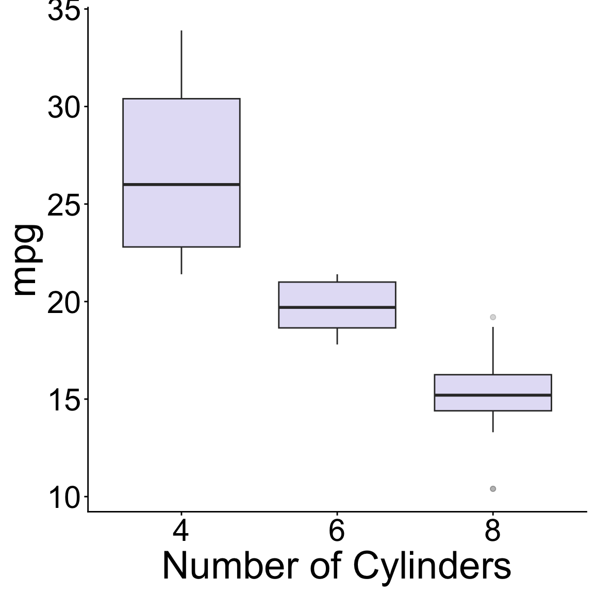
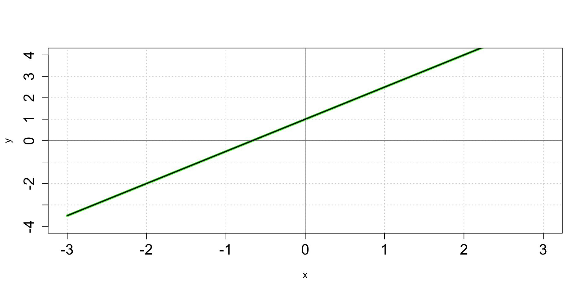
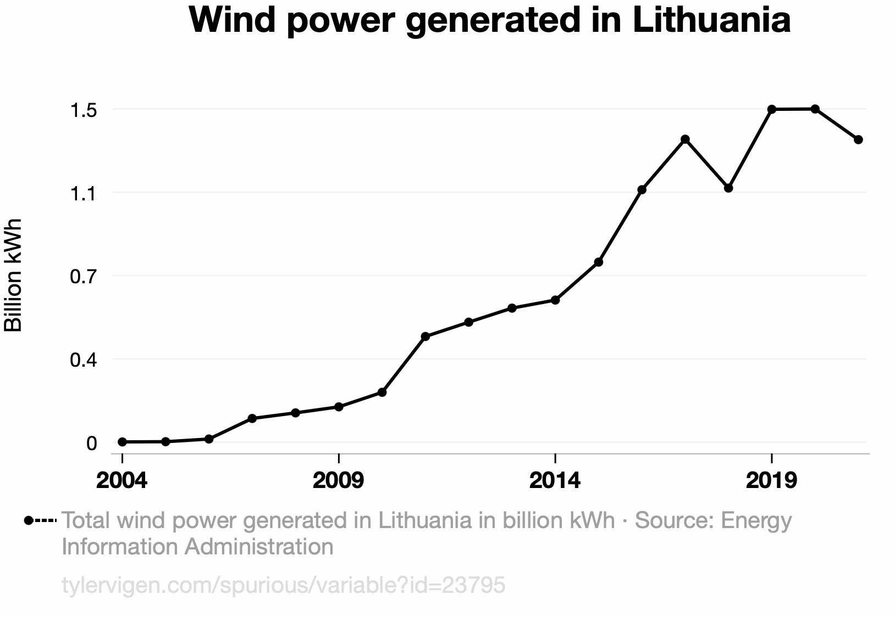
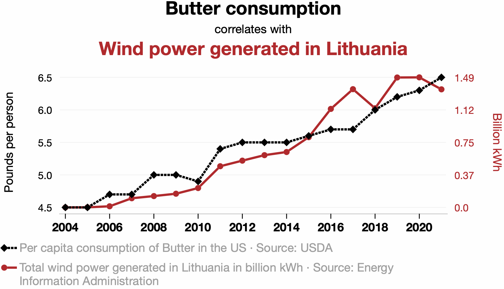
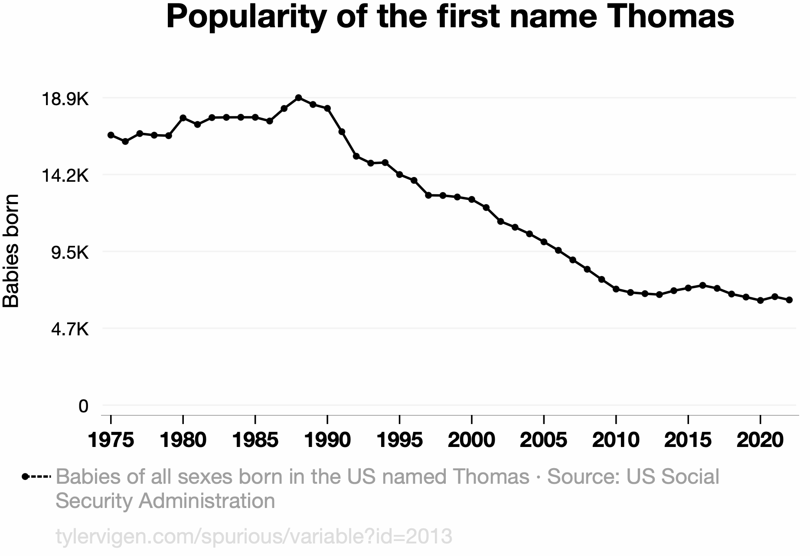
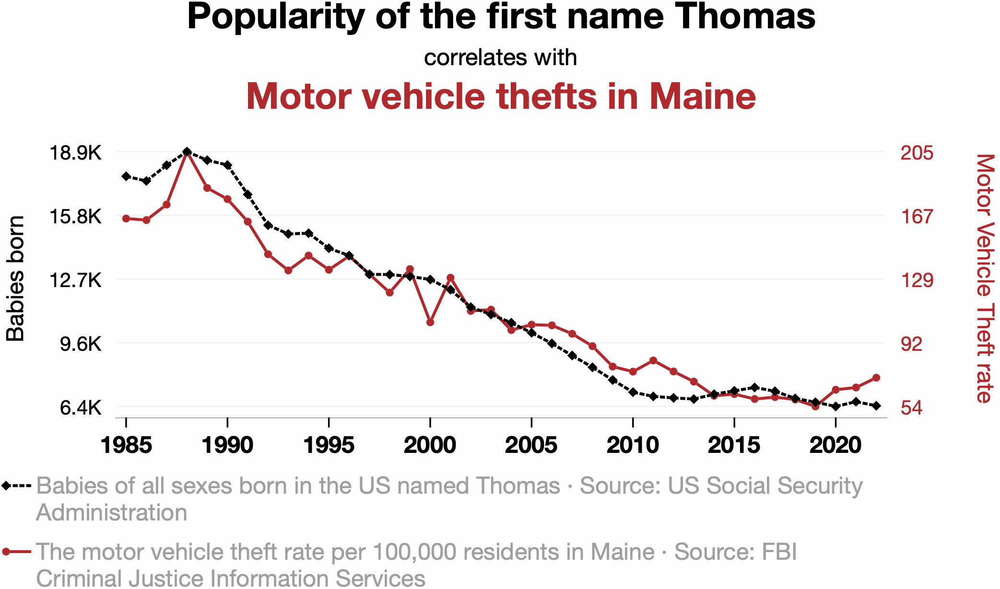
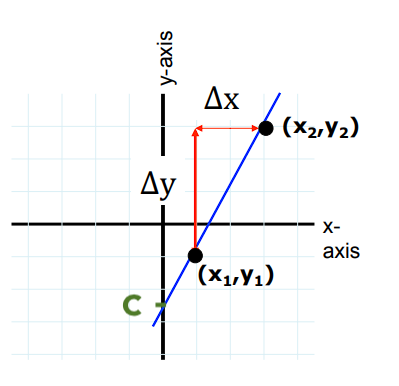
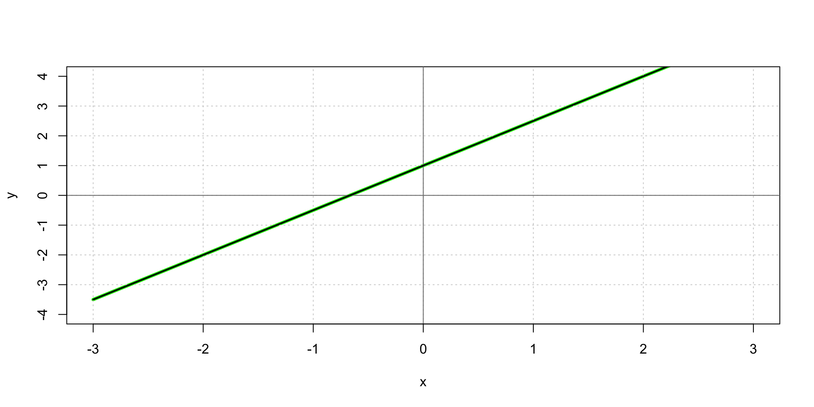

fuel (biomass) / slope / wildfire severity / windspeed / air temperature
wind speed / power generated by wind turbine
soil C:N ratio / bacterial biomass / soil water content / leaf litter decomposition rate
EDS 212: Day 1, Lecture 2
Functions, graphs, and linear functions
August 3rd, 2026
Functions
Functions
Functions are mathematical expressions that tell us how input values are related to output values.
For example, \(y = 3x-5\) is a function that tells us the value of y at any value of x. In this scenario, we would probably say y is a function of x.
Could you also rewrite it and say x is a function of y?
Here, with no knowledge of what’s an input and what’s an output, sure - but usually in environmental data science we specify the input variable(s), and the output variable(s) carefully.
What follows is the expression in the format of: “[output variable(s)] is/are a function of [input variable(s)]”.
Thinking about inputs and outputs
For the following combinations of related variables, which do you expect would be the input and the output in a function describing how they are related? E.g. “Evapotranspiration is a function of air temperature.”
✏️ Write your answer individually as a sentence.
Function notation
Function notation
Single variable (univariate) function:
\(f(x) = [expression\space containing \space x]\)
Multivariate function:
\(g(a,T,z)=[expression\space containing \space a, T, \space and \space z]\)
Evaluating functions
We evaluate functions by plugging in values of the input variables.
✏️ Example:
Evaluate \(g(x,t)=2.4x+0.5t^2\) at \(x = 3\) and \(t = 10\)
Evaluating functions
We evaluate functions by plugging in values of the input variables.
✏️ Example:
Evaluate \(g(x,t)=2.4x+0.5t^2\) at \(x = 3\) and \(t = 10\)
\(g(3, 10) = 2.4(3) + 0.5(10^2)= 57.2\)
Graphs
Why graphs?
Graphs are a way for us to more easily process trends or patterns that may be more challenging to understand in a table or list.
Which looks better and is easier to understand?

The \(xy\) coordinate system
Graphs generally move in a 2-dimensional plane with a coordinate system using two axes:
\(x\)-axis (horizontal axis)
\(y\)-axis (vertical axis)
Axes units must be defined depending on the application.
We use pairs of numbers to place data:
A point on the \(xy\) plane with coordinates \((a,b)\) means the point is located at \(a\) on the \(x\)-axis and at \(b\) on the \(y\)-axis.
Where would (2,-1) go on the graph?

We can join series of points to make graphs

Functions on a single variable and a single output can be graphed
- \(\color{green}{y=sin(3x)+2x}\)
- \(\color{red}{y=0.5x^3+x^2-5x}\)
- \(\color{blue}{y=0.85x+0.44}\)

Two key ingredients to graphs
Intercepts
\(x\)-intercept
- Where does the graph intersect the \(x\)-axis?
- In other words, for what values of \(x\) do we have \((x,0)\) be part of the graph?
\(y\)-intercept
- Where does the graph intersect the \(y\)-axis?
- In other words, for what value of \(y\) do we have \((0,y)\) be part of the graph?
What are the intercepts of the polynomial function in red?

Understanding graphs
When you look at graphs, the first things you should ask:
- What variables are being plotted (e.g. x- & y-axis, including units)?
- What values are plotted (e.g. raw values, transformed, means, etc.)?
- What are the overall takeaways and am I understanding them responsibly?
Reading graphs (in general)
“On the x-axis we have [x-variable] measured in [units] and on the y-axis the the [y-variable] measured in [units]. This figure shows the [change/pattern/relationship] between [x-variable] and [y-variable]. Overall [overall statement of pattern / trend / findings].”

Reading graphs (in general)
“On the x-axis we have [x-variable] measured in [units] and on the y-axis the the [y-variable] measured in [units]. This figure shows the [change/pattern/relationship] between [x-variable] and [y-variable]. Overall [overall statement of pattern / trend / findings].”

Source: TylerVigen.com
Reading graphs practice
💬 Partner 1 gets to read the graph for the first variable.
“On the x-axis we have [x-variable] measured in [units] and on the y-axis the the [y-variable] measured in [units]. This figure shows the [change/pattern/relationship] between [x-variable] and [y-variable]. Overall [overall statement of pattern / trend / findings].”

Reading graphs practice
💬 Partner 2 gets to read the plot for the second variable, provide context for the data, and hypothesise an explanation.
“On the x-axis we have [x-variable] measured in [units] and on the y-axis the the [y-variable] measured in [units]. This figure shows the [change/pattern/relationship] between [x-variable] and [y-variable]. Overall [overall statement of pattern / trend / findings].”

Reading graphs practice

Let’s take a 5 minute break

image: Flaticon.com
Lines
Linear functions: slope-intercept form
✏️
Linear functions: slope-intercept form
Easiest model to describe linear relationship between two variables!
\[ \huge \begin{align} \underbrace{y}_{\text{output}}=\overbrace{m}^{\text{Slope}}\underbrace{x}_{\text{input}}+\overbrace{b}^{\text{$y$ intercept}} \end{align} \]
Finding the equation of a line
✏️
Finding the equation of a line
Given two points \((x_1, y_1)\) and \((x_2, y_2)\) on the line:
- Find \(m\), the slope, by using the two points:
\[ m=\frac{\Delta y}{\Delta x}=\frac{y_2-y_1}{x_2-x_1}. \]
- Find \(c\), the y-intercept:
Since \((x_1, y_1)\) is on the line, it satisfies:
\[y_1 = mx_1+ c.\] We can solve for \(c\) to obtain:
\[c = y_1 - mx_1.\]

Equation of a line: practice
Find the equation of the line that:
passes through \((3,5)\) and \((2,-1)\).
passes through \((2,-5)\) and has \(x\)-intercept equal to 4.
has the following graph:
- Make a graph showing the line that passes through (3,-1) and has slope equal to 2.
Equation of a line: practice
Find the equation of the line that passes through \((3,5)\) and \((2,-1)\).
✏️ Let’s see a solution.
Equation of a line: practice
Find the equation of the line that passes through \((2,-5)\) and has \(x\)-intercept equal to 4.
✏️ Let’s see a solution.
Equation of a line: practice
Find the equation of the line that has the following graph:

✏️ Let’s see a solution.
Equation of a line: practice
Make a graph showing the line that passes through (3,-1) and has slope equal to 2.
✏️ Let’s see a solution.
Interpreting the slope
Slope (average)
Sometimes, it can be useful to find the average rate of change of a function.
Between any two points \((x_1,y_1)\) and \((x_2,y_2)\) on the graph of a function, the slope is found by:
\[m=\frac{\Delta y}{\Delta x}=\frac{y_2-y_1}{x_2-x_1}\]
Same idea as in a line!
Slope represents rate of change
Ice-core data before 1958. Mauna Loa data after 1958.

Source:The Keeling Curve
Get into the practice of saying the meaning out loud
- As if you’re explaining it to someone unfamiliar with the data
- Including units
- Without overstating certainty
For example:
“Between 1972 and 2020 the price of hobbit homes increased by an average of $2,450 per year”
differs from
“Between 1972 and 2020 the price of hobbit homes increased by $2,450 per year.”
The average slope of a continuous function rarely tells the whole story

Slope can be average or instantaneous
- Rise over run can always be used to find average rate of change between two parts of a graph
- Instantaneous rate of change leads us to ✨calculus✨.